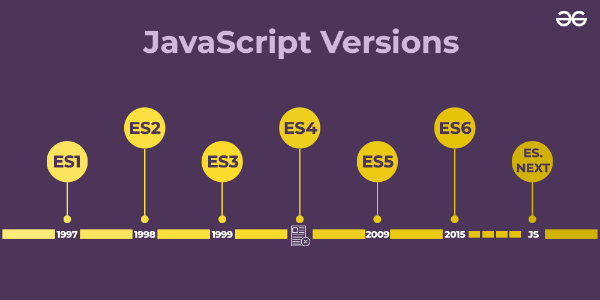
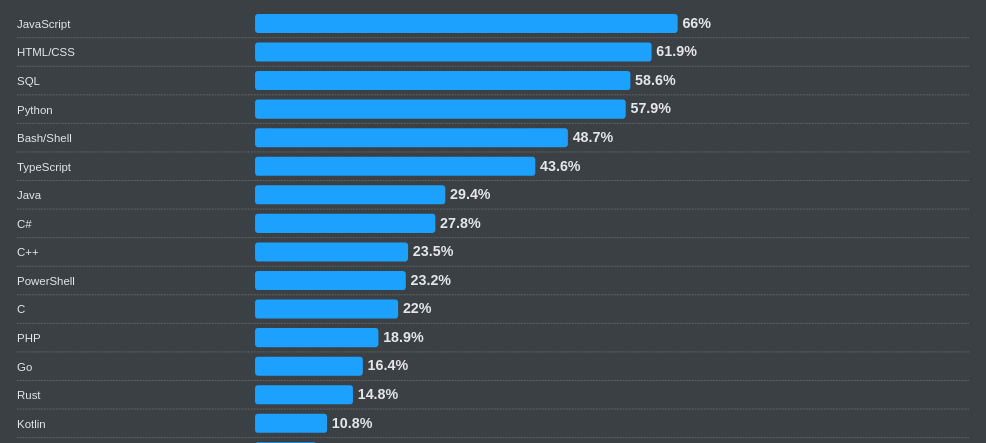
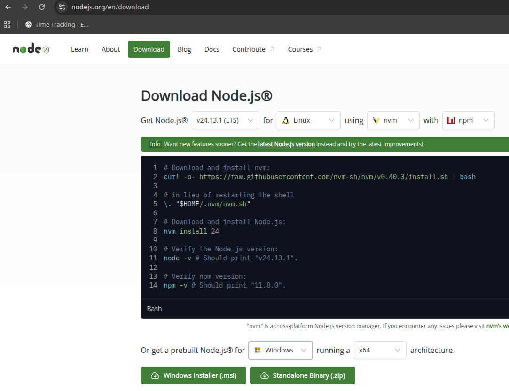

Lektion 1.1 — Teil 1: Sprachgrundlagen
Einführung in JavaScript
Lernziele
- Wissen, wofür JavaScript eingesetzt wird, wie es entstanden ist und was ECMAScript ist
- JavaScript in HTML einbinden (
<script>,defer) - Node.js und npm installieren und ein Projekt mit
npm initanlegen - Die wichtigsten Unterschiede zu Java kennen
- Variablen (
let,const), Datentypen, Vergleichsoperatoren und Kontrollstrukturen verwenden - Einen ersten Blick auf Funktionen, Objekte, Klassen, Arrays und Ausnahmebehandlung werfen
- Typumwandlung (Type Coercion) verstehen und ihre Fallen kennen
1 — Einleitung
- JavaScript (kurz JS) wird hauptsächlich für client-seitige Programmierung verwendet (Web-Frontend).
- JavaScript wird im Browser interpretiert, d. h. der Code wird nicht vorab übersetzt (kompiliert), sondern zur Laufzeit ausgeführt.
- Die Syntax von JavaScript ist auf den ersten Blick ähnlich zu Java.
- Jedoch: Es gibt große konzeptuelle und auch syntaktische Unterschiede.
- Laufzeitumgebung außerhalb des Browsers: Node.js
- Verbreitete Frameworks: Vue, Angular, React, Svelte
Im HTML-&-CSS-Kurs haben wir mit HTML die Struktur und mit CSS das Aussehen gebaut. JavaScript bringt das Verhalten dazu: auf Klicks reagieren, Inhalte verändern, Daten vom Server laden.
2 — Entwicklung und Versionen
- Ausgangspunkt war die Notwendigkeit einer Programmiersprache für den Browser (Netscape Navigator).
- Entwickelt wurde JavaScript von Brendan Eich in zehn Tagen (1995).
- Der Name lehnt sich an das damals aufstrebende und mit dem modernen Internet verbundene Java an – technisch haben die beiden Sprachen wenig gemeinsam.


Benennung: ECMAScript vs. JavaScript
- ECMAScript: offizieller Standard (ECMA-262) für Skriptsprachen
- JavaScript: Implementierung von ECMAScript, entwickelt von Netscape
- Alle modernen JavaScript-Versionen basieren auf ECMAScript.
- Im Alltag werden die Begriffe oft synonym verwendet.
- Siehe javascript.tm
Quellen
- Tutorial: w3schools.com/js
- Referenz: w3schools.com/jsref
- Referenz bei MDN: developer.mozilla.org/en-US/docs/Web/JavaScript/Reference
3 — Einbettung in HTML
Mittels <script>-Tags kann JS direkt in HTML eingebettet werden:
...
</p>
<script>
// Hierher kommt der JavaScript-Code
function foo() {
alert('Die Funktion foo wurde aufgerufen!');
}
</script>
<h2>
...Besser bindet man separate JavaScript-Dateien ein:
<script src="Projekt.js" defer></script>
Das Attribut defer ermöglicht das Einbinden im <head>: Der Browser lädt
das Script parallel, führt es aber erst aus, wenn das gesamte HTML gelesen wurde. So kann
das Script auf alle Elemente der Seite zugreifen.
4 — Node.js und npm
Node.js
- JavaScript-Laufzeitumgebung auf Basis der V8-Engine (Google)
- Entwickelt von Ryan Dahl (2009)
- Alternative: Deno (Ryan Dahl und Bert Belder)
- Ermöglicht serverseitige (oder lokale) Entwicklung mit JavaScript
- Häufig für Webserver, APIs, Tools und Skripte verwendet
- Riesiges Ökosystem durch npm (Node Package Manager)
npm – Node Package Manager
- Paketmanager für Node.js und JavaScript-Projekte
- Ermöglicht Installation, Verwaltung und Veröffentlichung von Paketen (Libraries, Tools)
- Zentrale Registry: npmjs.com
- Standardwerkzeug bei Node.js-Projekten (
package.json) - Unterstützt Skripte und Abhängigkeitsmanagement
Installation

Alternativ unter Windows: winget install OpenJS.NodeJS
Version prüfen und Projekt initialisieren
Mit den folgenden Befehlen werden die installierten Versionen von Node.js und npm angezeigt:
node -v
npm -vGegebenenfalls unter Windows (PowerShell) notwendig, damit npm-Skripte ausgeführt werden dürfen:
Set-ExecutionPolicy -Scope CurrentUser -ExecutionPolicy RemoteSignedInitialisieren eines neuen npm-Projekts:
npm init -yDadurch wird eine package.json mit Standardwerten erstellt. Eine Datei app.js führt man dann mit node app.js aus.
5 — Unterschiede zu Java
- Datentypen werden nicht angegeben.
- Klassen existieren seit ECMAScript 2015 (ES6), funktionieren jedoch etwas anders: z. B. gibt es nur einen Konstruktor.
- Objekte unterscheiden sich erheblich von Java-Objekten.
- Ebenso gibt es Unterschiede bei Funktionen (vgl. Methoden).
6 — Variablen
- Es werden keine Datentypen angegeben!
- Datentypen sind dynamisch: Sie können sich zur Laufzeit ändern!
constfür unveränderliche Variablen,letfür veränderliche Variablen,varist veraltet (funktionaler Scope).
function myFunction(x) {
if (x > 10) {
let a = 10; // Gültigkeit im Block
var b = 20;
}
// Variable b hier sichtbar
// Variable a nicht
}Standardmäßig const verwenden. Nur wenn der Variablen später ein neuer Wert
zugewiesen wird, let. var gar nicht mehr.
7 — Vergleichsoperatoren
| Operator | Bedeutung |
|---|---|
== | equal to – gleicher Wert (mit Typumwandlung) |
=== | equal value and equal type – gleicher Wert und gleicher Typ |
!= | not equal |
!== | not equal value or not equal type |
"5" == 5 ist true, "5" === 5 ist false.
Warum das so ist, zeigt Abschnitt 14 (Type Coercion).
8 — Datentypen
- String:
let str1 = "Hallo"; let str2 = "World!"; - Zahlen:
let a = 4; let b = 3.1415;
Intern werden alle Zahlen als 64-Bit-Fließkommazahl verarbeitet. Konversion in eine Zahl mitNumber("3.14"). - Boolean:
let b = false; let c = true;
| Datentyp | Beschreibung |
|---|---|
number | Zahlen (Ganzzahlen und Fließkommazahlen doppelter Genauigkeit). Beispiel: 42, 3.14, -Infinity, Infinity, NaN |
bigint | Für sehr große Ganzzahlen jenseits von Number.MAX_SAFE_INTEGER. Beispiel: 123456789012345678901234567890n |
string | Zeichenketten. Beispiel: "Hallo Welt" |
boolean | Wahrheitswerte: true oder false |
undefined | Variable wurde deklariert, aber noch nicht initialisiert |
null | Bewusste Abwesenheit eines Wertes |
symbol | Einzigartige und unveränderliche Werte, oft für Objekt-Eigenschaften verwendet |
object | Sammlung von Schlüssel-Wert-Paaren oder komplexe Datentypen (Arrays, Funktionen, Objekte) |
function | Spezielle Art von Objekt, das ausführbaren Code enthält |
Den Typ eines Wertes liefert der Operator typeof, z. B. typeof 42 → "number".
9 — Funktionen und Kontrollstrukturen
Funktionen entsprechen den Methoden in Java. Sie müssen aber nicht an Klassen/Objekte gekoppelt sein.
function berechneSumme(a, b) {
return a + b;
}if (condition1) {
// Code ...
} else if (condition2) {
// Code ...
} else {
// ...
}
let sum = 0;
for (let i = 0; i < 10; i++) {
sum += i;
}Funktionen behandeln wir ausführlich in Lektion 1.2.
10 — Objekte und Klassen
Alle Werte, die keine primitiven Datentypen sind, sind vom Typ Object.
let person = {
vorname: "Franz",
nachname: "Maier",
geburtsjahr: 1988,
augenfarbe: "blau",
ganzerName: function() {
return this.vorname + " " + this.nachname;
}
};
// Zugriff auf die Objekteigenschaften
let x = person.vorname;
// oder
let y = person["vorname"];
let z = person.ganzerName();
console.log(typeof person); // 'object'Klassen wurden erst nachträglich zu JS hinzugefügt (seit ECMAScript 2015 / ES6).
class Auto {
constructor(marke, baujahr) {
// Parameterprüfung! (hier weggelassen)
this.marke = marke;
this.baujahr = baujahr;
}
info() {
return this.marke + " " + this.baujahr;
}
toString() {
return this.info();
}
}
// Objekt erzeugen
let auto = new Auto("BMW", 2001);
let autoInfo = auto.info();Objekte und Klassen vertiefen wir in Lektion 1.4.
11 — Arrays
const firmen = ["hp", "IBM", "Lenovo", "Dell"];
for (let i = 0; i < firmen.length; i++) {
let x = firmen[i];
// mache irgendetwas mit x ...
}
// letztes Element entfernen
firmen.pop();
// Hinzufügen
firmen.push("Samsung");
// leeres Array erzeugen:
const laender = [];const firmen verhindert nur, dass der Variablen ein anderes Array
zugewiesen wird. Den Inhalt des Arrays darf man trotzdem mit push/pop
verändern. Mehr zu Arrays in Lektion 1.3.
12 — Ausgabe und Debugging
Statt System.out.println in Java verwendet man in JS console.log() zur Ausgabe auf die Browser-Konsole.
...
<script>
const auto = new Auto("Mercedes", 1999);
const autoInfo = auto.info();
console.log("Info zum Auto: " + autoInfo);
</script>
...Die Browser-Konsole findet man im Webbrowser unter „Entwicklertools“ (F12 → Tab Console).
13 — Ausnahmebehandlung
Mit throw können in Ausnahme- und Fehlersituationen Fehler „geworfen“ werden.
function kinetischeEnergie(masse, geschwindigkeit) {
if (masse <= 0) throw "ungueltige Masse";
if (geschwindigkeit < 0) throw "ungueltige Geschwindigkeit";
return masse * geschwindigkeit * geschwindigkeit / 2;
}
try {
kinetischeEnergie(-3, -5);
} catch (e) {
console.error(e);
}Geworfene Fehler werden mit try … catch abgefangen und behandelt.
Statt eines Strings wirft man üblicherweise ein Error-Objekt:
throw new Error("ungueltige Masse"). Es enthält zusätzlich einen Stacktrace,
und die Meldung steht in e.message.
14 — Type Coercion
Type Coercion bedeutet Typumwandlung in JavaScript.
- Implizit: JavaScript wandelt Typen automatisch um (z. B. bei
==oder+). - Explizit: Wir wandeln selbst um, z. B. mit
Number(...)oderString(...). - Viele „komische“ Ergebnisse entstehen durch implizite Umwandlung.
Typische Beispiele
| Ausdruck | Ergebnis | Warum passiert das? |
|---|---|---|
"5" + 3 | "53" | + kann Strings verketten; 3 wird zu "3". |
"5" - 3 | 2 | - erzwingt Zahlenkonvertierung auf beiden Seiten. |
5 + true | 6 | true wird zu 1. |
5 + false | 5 | false wird zu 0. |
true == 1 | true | Bei == findet implizite Konvertierung statt. |
false == 0 | true | false wird zu 0 konvertiert. |
"" == 0 | true | Leerer String wird zu 0. |
"" == false | true | Beide Seiten landen bei 0. |
null == undefined | true | Spezialregel im losen Vergleich. |
null == 0 | false | null wird hier nicht zu 0. |
[] == "" | true | Leeres Array wird zu leerem String. |
[] == 0 | true | [] → "" → 0. |
["5"] == 5 | true | Array → String "5" → Zahl 5. |
[0] == false | true | [0] → "0" → 0. |
"0" == false | true | "0" wird zu 0. |
"\t\n" == 0 | true | Whitespace-String wird zu 0. |
[] + {} | "[object Object]" | Beide Seiten werden als Strings kombiniert. |
Weitere komische Fälle
| Ausdruck | Ergebnis | Kommentar |
|---|---|---|
[] == ![] | true | ![] ist false, danach [] == false. |
NaN == NaN | false | Einziger Wert, der nicht gleich sich selbst ist. |
typeof null | "object" | Historischer Bug aus den frühen JS-Versionen. |
0 < 1 < 2 | true | (0 < 1) ist true; true wird zu 1; dann 1 < 2. |
2 < 1 < 0 | false | (2 < 1) ist false; false wird zu 0; dann 0 < 0. |
Häufige Fehler
Ein Script im <head> ohne defer findet mit document.querySelector nichts (null).
Externe Scripts mit defer einbinden oder das <script> ans Ende des <body> setzen.
if (eingabe == 0) ist auch für einen leeren String "" wahr.
Immer === und !== verwenden und Eingaben bei Bedarf explizit mit Number(...) umwandeln.
"5" + 3 ergibt "53" – Werte aus Formularfeldern sind immer Strings.
Vor dem Rechnen umwandeln: Number(input.value) + 3.
Aufgaben
Befüllen Sie ein Array mit Zahlen und sortieren Sie diese mit einer eigenen Implementierung von Selection Sort (oder einem beliebigen anderen Sortieralgorithmus). Der Sortieralgorithmus soll in einer eigenen Funktion umgesetzt sein. Die Vertauschung der Elemente soll ebenfalls in einer eigenen Funktion umgesetzt werden. Geben Sie das sortierte Array auf der Browser-Konsole aus.
Erstellen Sie eine Klasse Auto mit den Eigenschaften marke, gewicht und ps. Die Marke darf nicht leer sein, das Gewicht muss im Bereich 500 bis 3000 kg liegen, PS muss größer als 30 sein. Die Funktion verbrauch() der Klasse soll den Verbrauch näherungsweise berechnen: PS mal Gewicht, dividiert durch 10000. Die Ausgabe eines Autos auf die Konsole soll so aussehen:
Ferrari (1000 kg, 340 PS, Verbrauch: 34 l/100km)Befüllen Sie nun ein Array mit mehreren Autos. Sortieren Sie die Autos aufsteigend nach Verbrauch mit einem selbst implementierten Algorithmus (nach den Vorgaben von Aufgabe 1). Geben Sie das sortierte Array auf der Browser-Konsole aus.
Notieren Sie zuerst Ihre Vermutung und prüfen Sie sie dann in der Konsole: "10" / "2", "10" + 2 - 1, true + true, [1,2] + [3], null + 1, undefined + 1.
Legen Sie mit npm init -y ein Projekt an und führen Sie Ihre Sortierfunktion aus Aufgabe 1 mit node sort.js im Terminal statt im Browser aus.